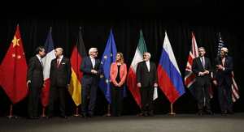

US Tries to “Snapback” Sanctions on Iran
Washington is seeking to re-impose sanctions on the Islamic Republic of Iran.President Donald Trump has announced that the United States intends to activate a 'trigger mechanism' at the United Nations to reinstate all sanctions related to Iran’s nuclear program.'It’s a snapback,' Trump said on Wednesday.
President Trump has said he has asked Secretary of State Mike Pompeo to submit a US request to the UN Security Council on Thursday.'The United States intends to restore virtually all of the previously suspended United Nations sanctions on Iran,' Trump said.
Trump called the JCPOA another staggering deal, which he said, ultimately led to a catastrophe and financed all the riots and bloodshed in the region and the world.According to a UN spokesman, Pompeo will meet with UN Secretary-General Antonio Guterres on Thursday afternoon to discuss the US request.
The State Department issued a statement Wednesday evening confirming that Mike Pompeo will travel to New York on August 20 and 21 to urge the Security Council to work with the United States to activate the 'trigger mechanism' and reinstate sanctions.
Inform the Nations Against the Islamic Republic
'This will be a fully valid enforceable Security Council resolution and we have every expectation that it will be enforced just like every other Security Council resolution that is in place,' Pompeo said Wednesday.'We will be in full compliance with that and we have every expectation that every country in the world will live up to its obligations.'
America tried last week to propose a resolution at the Security Council to extend the arms embargo against Iran.However, Washington’s proposal failed after receiving 11 abstentions and two votes against.Only the United States and the Dominican Republic voted in favor of the plan.
Once again, US efforts to activate the 'trigger mechanism' are likely to be met with disregard by other members of the Security Council.Analysts say this will undoubtedly lead to a deep rift and crisis in the Security Council.
At a news conference on Thursday, the US president accused the Islamic Republic of not adhering to the IAEA Board and reiterated that Iran will never acquire a nuclear weapon.The US government believes that despite its withdrawal from the Nuclear Non-Proliferation Treaty (NPT), it is able to reinstate all sanctions against the Islamic Republic by relying on the so-called 'trigger mechanism.'
The 'trigger mechanism' is included in Resolution 2231.States party to a nuclear agreement can rely on it to claim that the other party to the agreement has not fulfilled its obligations.
In this case, the UN sanctions against Iran will be reinstated after a legal process that lasts a total of 65 days.The United States believes that the participating countries are the countries that have signed the UN Security Council.
However, Iran, the European Union, China, and Russia have stated that the United States will no longer be considered a participating party due to its withdrawal from the UN Security Council, and will not be allowed to use the trigger mechanism.Russian Foreign Minister Sergei Lavrov has accused the United States of trying to launch a political campaign against the Islamic Republic.
The US’ attempt to activate the trigger mechanism through legal channels in the US itself has also been controversial.John Bolton, a former US security adviser known for his tough stance on the Islamic Republic, said the United States had 'lost the right to use the trigger mechanism' by withdrawing from the Iran Nuclear Deal.
[bsa_pro_ad_space id=4]
Share on Facebook Tweet Follow us
Posted On: 2020-08-20T00:00:00
Posted By: Doris Mkwaya




Content Date: 2020-08-20
Download Date: 2021-07-09
Document ID: L0C04EGAM